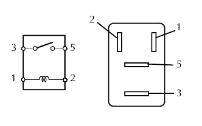
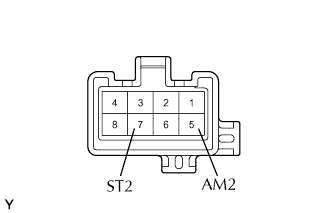
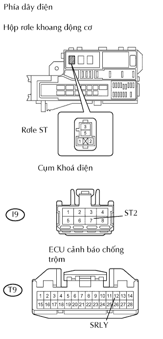

HỆ THỐNG CHỐNG TRỘM > Mạch rơle máy đề |
| 1.KIỂM TRA CẦU CHÌ (ST) |
Tháo cầu chì ST ra khỏi hộp rơle bảng táplô.
Đo điện trở của cầu chì.
|
| ||||
| OK | |
| 2.KIỂM TRA RƠLE MÁY ĐỀ (Dấu:ST) |
|  |
Tháo rơle máy đề ra khỏi hộp rơle khoang động cơ.
Đo điện trở của rơle.
| Nối dụng cụ đo | Điều kiện tiêu chuẩn |
| 3 - 5 | 10 kΩ trở lên |
| 3 - 5 | Dưới 1 Ω (khi điện áp ắc quy được cấp đến cực 1 và 2) |
|
| ||||
| OK | |
| 3.KIỂM TRA CỤM KHOÁ ĐIỆN |
|  |
Tháo khóa điện.
Đo điện trở của khóa điện.
| Nối dụng cụ đo | Tình trạng công tắc | Điều kiện tiêu chuẩn |
| 5 (AM2) - 7 (ST2) | OFF, ACC, ON | 10 kΩ trở lên |
| 5 (AM2) - 7 (ST2) | START | Dưới 1 Ω |
|
| ||||
| OK | |
| 4.KIỂM TRA DÂY ĐIỆN (HỘP RƠLE KHOANG ĐỘNG CƠ - ECU CẢNH BÁO CHỐNG TRỘM VÀ KHOÁ ĐIỆN) |
|  |
Tháo rơle ST ra khỏi hộp rơle khoang động cơ.
Ngắt giắc nối I9 của công tắc.
Ngắt giắc nối T9 của ECU.
Đo điện trở của các giắc nối phía dây điện.
| Nối dụng cụ đo | Điều kiện tiêu chuẩn |
| Cực 1 của rơle R/B ST - T9-12 (SRLY) | Dưới 1 Ω |
| Cực 2 của rơle R/B ST - T9-7 (ST2) | Dưới 1 Ω |
|
| ||||
| OK | ||
| ||